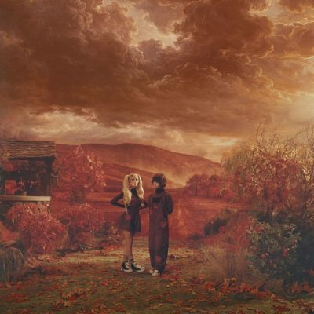
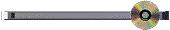
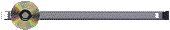

(label :Blue Note)
DOMi & JD Beck"s album list
Site Contents
|
|
| Score Card | ||
| ラップ(rap oriented) |  |
歌(song oriented) |
| アーバン(urban) |  |
アーシー(earthy) |
| 聴きやすい(familiar) | リスナーを選ぶ(serious) | |
| 評点(rating) | （5点満点 fullmark :5） | |
| グラミー賞2部門ノミネートのデビュー作『NOT TiGHT』（2022年）以来、4年ぶり2枚目のアルバム。前作リリースからの4年間はSNSの更新も停止し目立った活動がなかったが、その沈黙を破り本作が届けられた。 豪華ゲストが話題を呼んだ前作とは対照的に、外部ゲストに頼らず、DOMiとJD BECK自身を中心に作り上げたコンセプト作で、楽譜制作ソフト「Sibelius」で全ての音をあらかじめ書き上げてから演奏し直すという徹底したアプローチを採用している。12人編成の小管弦楽団（シンフォニエッタ）を導入し、オープニングからエピローグまでが交響曲のように繋がる、緻密な音の物語を描き出している。 超高速の変拍子ドラムと流れるようなキーボードに、弦楽器や木管楽器が緻密に絡み合う高度に構築されたサウンドで、JAZZをベースにしつつも、J. Dilla的なオフビートやドラムンベースの要素、アヴァンギャルドな電子音響が、ダミーヘッドマイク（Neumann KU 100）による立体的な録音と合わさり、高精細で立体的な音響空間を作り出している。 ソロイストの客演を置かず、制作は本人たちのみによる一方、裏方陣が重要な役割を果たしている。Death GripsのZach Hillがサウンドデザインとしてグリッチな電子音響を付加し、DOMiの兄であるNoé Degalleが「CONCERTiNO」など3曲の共同作曲・管弦楽編曲を担当 している。 多くの曲でDOMiとJD BECK自らのボーカルが全面的にフィーチャーされているのも前作からの変化で、単に歌として主役を張るのではなく、輪唱のように重なり合う緻密な対位法やハモり、管弦楽パートとの重複を駆使し、声をひとつの楽器、あるいは音響テクスチャーとして巧みにアンサンブルの中に組み込んでいるのが特徴になっている。 リリックでは、対立や孤立、日常からの脱出、あるいは時間の経過や、それに従う成長・老いといったテーマが、詩的でミステリアスな言葉で表現されている。 一曲一曲は非常に凝った作りだが、アルバムを通して聴くと展開の起伏に乏しいところもあり、全体としてやや平板に感じられるのが惜しい気がする。 |
||
| Tracks 輸入盤 歌詞無し 53 minutes07 seconds | ||||||||||||||||||||||||||||||||||||||||||||||||||||||||||||||||||||||||||||||||||||
|
||||||||||||||||||||||||||||||||||||||||||||||||||||||||||||||||||||||||||||||||||||
| Producers | ||||||||||||||||||||||||||||||||||||||||||||||||||||||||||||||||||||||||||||||||||||
| Domi & JD Beck(all) | ||||||||||||||||||||||||||||||||||||||||||||||||||||||||||||||||||||||||||||||||||||
| Guests | ||||||||||||||||||||||||||||||||||||||||||||||||||||||||||||||||||||||||||||||||||||
| Links | ||||||||||||||||||||||||||||||||||||||||||||||||||||||||||||||||||||||||||||||||||||
| https://www.bluenote.com/ https://www.domiandjdbeck.com/#/ https://www.apeshitinc.com/ |
||||||||||||||||||||||||||||||||||||||||||||||||||||||||||||||||||||||||||||||||||||
| Other Reviews | ||||||||||||||||||||||||||||||||||||||||||||||||||||||||||||||||||||||||||||||||||||
|
||||||||||||||||||||||||||||||||||||||||||||||||||||||||||||||||||||||||||||||||||||
Copyright © 1998-2026 planet.KY. All rights reserved.